Essential Commands: Text Filters
Why text filters matter
The rule of Linux: almost everything is text. The settings that run the system are text files. The diaries the system keeps (logs) are text. Even the answers you get after typing a command are just text.
The problem: information overload. Those files grow huge. Finding one error in tens of thousands of lines by reading is simply not possible.
The solution: text filters, small programs that act like smart reading assistants. They take a big chunk of text, process it (search, sort, chop it up) according to your instructions, and hand back only the pieces you care about.
1. Takes text
From a file, or from another command through a pipe |.
2. Processes it
Counts, sorts, removes duplicates, cuts out parts, or swaps characters.
3. Shows the result
Prints to the screen. Your original file stays untouched.
A text filter does not create text by itself. It only filters or modifies text that already exists.
wc · measure your text
Now that you know why filters exist and how they process text, meet your very first tool: wc. It stands for word count, but that name is modest; it does much more than count words. Think of it as a quick calculator (or measuring tape) for text. Hand it a file or a chunk of text and it instantly measures four things:
Lines
The total number of lines in the document.
Words
The total number of individual words.
Characters
Every letter, number, space and punctuation mark.
Bytes
The actual physical size of the text data.
So while people call it the word count command, wc is really your go-to tool whenever you need to know exactly how long or how large a piece of text is.
wc filenameExample. Suppose file1.txt contains:
Linux is powerful
Linux is secure
Linux is fastwc file1.txt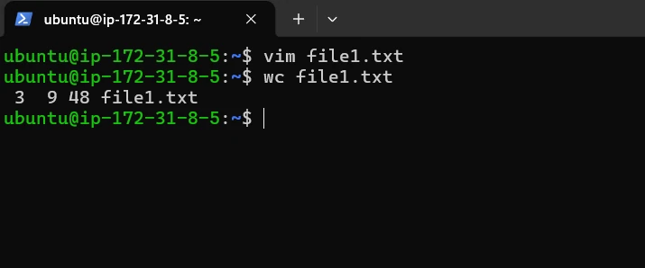
3 9 48 file1.txt.What does this mean?
3 → total number of lines
9 → total number of words
48 → total number of bytes (17 + 15 + 13 visible characters, plus one invisible newline at the end of each line)
file1.txt → the file name
\n). It counts as one character and one byte. That is why byte counts are a little bigger than the letters you can see.Counting one thing at a time
The wc command can count different things separately using options. Each option makes it print just one number.
A) Count lines: -l
What it does: counts how many lines are in a file. Simple meaning: how many times you pressed Enter to start a new line.
wc -l filenameFull example. Suppose todo.txt contains 3 separate lines:
Buy milk
Clean room
Call Momwc -l todo.txt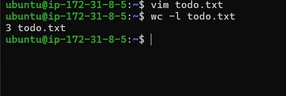
3 todo.txt: three lines.B) Count words: -w
What it does: counts the total number of words in a file. Simple meaning: it counts every group of letters separated by a space.
wc -w filenameFull example. Suppose note.txt contains one line with 4 separate words:
Linux is very coolwc -w note.txt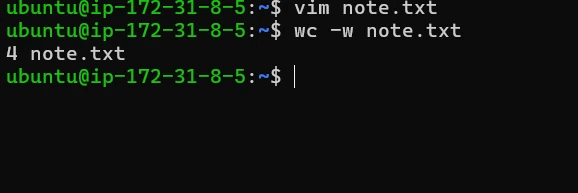
4 note.txt: four words.C) Count characters: -m
What it does: counts every single character in a file. Simple meaning: every letter, number, space and punctuation mark you typed.
wc -m filenameFull example. Suppose hi.txt contains:
Hello World!You can see 12 characters: H, e, l, l, o, a space, W, o, r, l, d and !.
wc -m hi.txt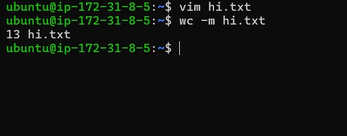
13 hi.txt: the 12 visible characters plus the newline at the end of the line.D) Count bytes: -c
What it does: counts the total size of the file in bytes. Simple meaning: how much memory or space the file takes up on your computer.
wc -c filenameFull example. Suppose data.txt contains some text. Most English letters use 1 byte of space.
Hello worldwc -c data.txt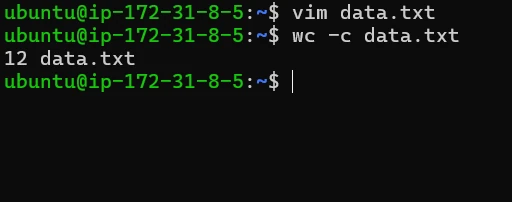
12 data.txt: 10 letters + 1 space + 1 newline = 12 bytes.Important: characters vs bytes
Characters and bytes are not always a 1-to-1 match. Even if you see only one character on your screen, the computer might need multiple bytes of memory to store it.
Normal text
Standard English letters (A, B, C), digits, spaces: 1 character usually equals 1 byte, so -m and -c agree.
Special text
Symbols, emojis (😊) and complex characters such as accented letters or Hindi script: 1 character can take up to 4 bytes in UTF-8, so -c is bigger than -m.
echo "😀" | wc -m # 2 (the emoji + newline)
echo "😀" | wc -c # 5 (4 bytes for the emoji + 1 for newline)wc with several files and with pipes
Several files at once
What it does: measures two or more files at the same time and gives a summary. Simple meaning: like putting several items on a scale one by one, then reading the total weight of everything at the bottom. Just list the file names one after another:
wc file1.txt file2.txtExample. Suppose you have two files: file1.txt (a small note) and file2.txt (a longer list). The output looks like this (illustrative numbers):
10 50 300 file1.txt
20 70 500 file2.txt
30 120 800 total- Individual file counts: each file gets its own row with its own stats (lines, words, bytes).
- The total row: the very last line adds up the numbers from all the files above it.
With a pipe |
What it does: combines wc with other commands. Simple meaning: the pipe acts like a tunnel that sends the results of one command directly into wc to be counted. So the flow becomes:
Example: count the files in your current folder without counting by hand
ls | wc -l- 1
lslists all your files (one per line when sent into a pipe). - 2
|sends that list to the counter instead of the screen. - 3
wc -lcounts the lines in the list, and each line is one file.
Full example. Suppose a file contains these lines, and you want to read it with cat and immediately count the words:
Linux is powerful
Linux is securecat file1.txt | wc -wcat file1.txtopens and displays the text.|sends the text through the “tunnel”.wc -wcounts every word in that text (6 here). Whenwcreads from a pipe, it prints no file name.
sort · put lines in order
Why sort exists: imagine a file full of names, numbers, logs or user IDs. This data is usually collected in a messy, “first-come, first-served” order. To find what you need quickly, you organise it alphabetically or numerically. sort is the “Sort A to Z” button for your command line.
Names
Putting a contact list in alphabetical order.
Numbers
Arranging prices from lowest to highest.
Logs
Organising events by their ID or timestamp.
User IDs
Sorting people by their member numbers.
The most basic version sorts a file alphabetically:
sort filenameFull example. Suppose names.txt is messy:
Zebra
Apple
Monkey
Bananasort names.txt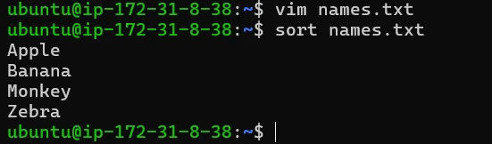
Why is this helpful? Data is often unordered when it is first created. You organise it because of:
Human readability
Finding “Banana” in an alphabetical list is much easier than in a random one.
Computer efficiency
Many other Linux tools, like uniq below, require the data to be sorted first before they can work properly.
Numbers, reverse and unique: -n, -r, -u
Numeric sort -n
What it does: sorts numbers by their actual value (1, 2, 10, 20). Simple meaning: without it, the computer is “silly” and thinks 10 comes before 2, because it only looks at the first character (“1” comes before “2”). -n tells it to look at the whole number.
sort -n filename-n when sorting numbers.Full example. Suppose names.txt now contains numbers:
10
2
50
1If you run a normal (alphabetical) sort:
sort names.txt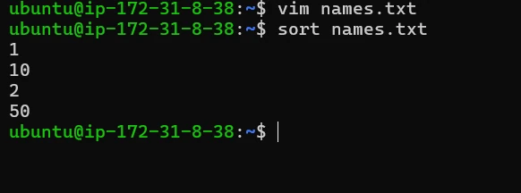
10 lands before 2.Now the numerical command:
sort -n names.txt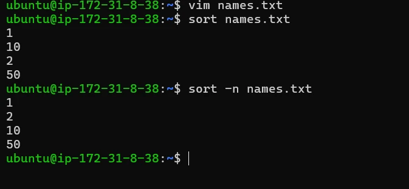
sort gives 1 10 2 50, sort -n gives 1 2 10 50.Reverse sort -r
What it does: flips the order of your list. Simple meaning: instead of A to Z it goes Z to A; instead of 1 to 10 it goes 10 to 1.
sort -r filenameFull example. Suppose fruits.txt contains:
Apple
Banana
Cherrysort -r fruits.txt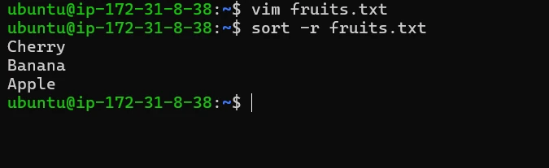
Combining options: numeric + reverse -nr
You can use options together. To see a list of prices from the most expensive to the cheapest, combine -n and -r. Full example. Suppose points.txt contains:
10
50
25sort -nr points.txt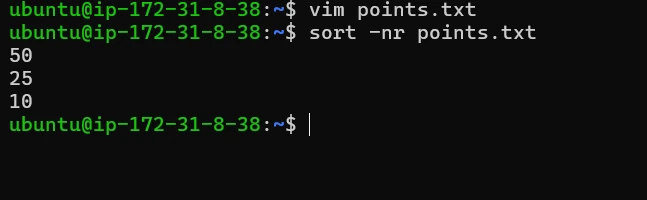
Sort and remove duplicates: -u
What it does: sorts the list and removes identical lines. Simple meaning: if a word appears three times, -u (unique) “cleans” it so you see it only once. It’s the fastest way to get a list of unique items.
sort -u filenameFull example. Suppose members.txt has some names repeated:
Alice
Bob
Alice
Charlie
Bobsort -u members.txt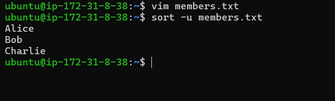
Why is this helpful?
- Clean lists: when you collect email addresses or usernames, you don’t want the same one appearing twice.
- Counting unique items: combine it with
wcthrough a pipe to count how many unique people are in a list:
sort -u members.txt | wc -l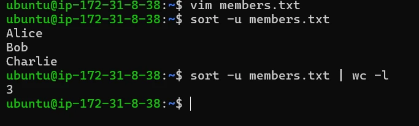
uniq · remove repeated lines
Why uniq exists: files sometimes contain repeated entries that clutter your data: the same name or ID several times in a row, when you only want to see it once. uniq is a duplicate remover.
The important rule: uniq is a bit picky. uniq only removes duplicates that are consecutive, right next to each other.
- apple, apple, banana → it works.
- apple, banana, apple → it does not, because the apples are separated.
The solution: almost always sort first to put identical items together, then pipe them into uniq:
sort filename | uniquniq can collapse them.Full example. Suppose list.txt contains:
apple
apple
banana
appleIf you run uniq alone, it only merges the first two apples because they are touching. It misses the third one:
uniq list.txt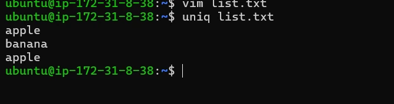
Now the combined command:
sort list.txt | uniq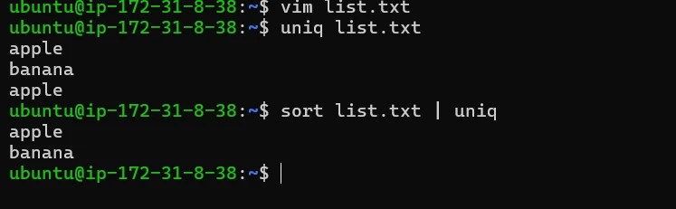
Count duplicates with -c
What it does: shows how many times each line appears. Simple meaning: it adds a counter in front of each line so you know exactly how many copies were found.
uniq -c filenameFull example. Suppose fruits.txt now contains:
apple
apple
banana
bananauniq -c fruits.txt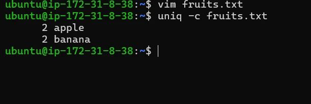
uniq only works on lines that are consecutive (touching). uniq -c on unsorted data gives several small counts for the same word. Use sort file | uniq -c.cut -d ' ' -f1 access.log | sort | uniq -c | sort -nr | head gives a ranked top 10 in one line. You’ll use this sort → uniq -c → sort -nr pattern constantly when reading customer logs.cut · extract part of every line
The cut command extracts specific parts of text from a file. If a file contains many characters or many columns of data, cut lets you select and display only the part you need. Instead of showing the whole file, it cuts out the required portion. Its main purpose: extract required data from a file, printing only the selected characters or columns.
cut [option] filenamecut→ the command used to extract dataoption→ tells which part of the text to extractfilename→ the file the data will be extracted from
Example: cut -c 3 file.txt. Here -c means character position and 3 means the third character of each line, so this prints only the third character from every line in the file.
Full example. Suppose file.txt contains the lines below, and you only want to see the 3rd character of every word:
Apple
Banana
Cherrycut -c 3 file.txt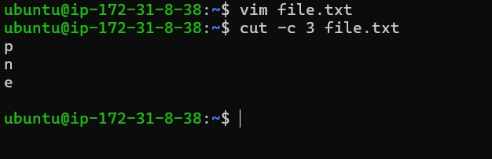
Apple → third character p; Banana → n; Cherry → e. So the command prints the third character from each line.
Counting positions
Positions start at 1, not 0. Here is how cut -c sees the line HELLOWORLD:
5-9 includes both ends.Character-based extraction: one position
What it does: pulls out a single character from a specific spot in every line. Simple meaning: you give a number, and cut goes to that exact position in every row and grabs the letter or symbol sitting there.
cut -c position filenameFull example. Suppose emp.txt contains:
HELLOWORLD
LINUXSYSTEM
PROGRAMMINGcut -c 9 emp.txt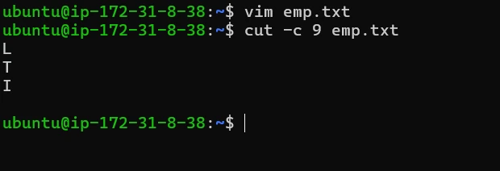
HELLOWORLD → L, LINUXSYSTEM → T, PROGRAMMING → I. So cut -c 9 prints the 9th character from every line.
Extract a range of characters
What it does: extracts a “slice” or “chunk” of text from every line. Simple meaning: instead of one letter, you give a start and an end number to cut out a whole section.
cut -c start-end filename-c→ character positionsstart-end→ the range of characters to extractfilename→ the file the characters are taken from
Full example. Using the same emp.txt (HELLOWORLD, LINUXSYSTEM, PROGRAMMING), extract everything from the 5th character to the 9th:
cut -c 5-9 emp.txt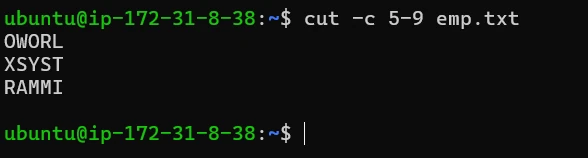
This displays characters from position 5 to position 9 of every line in the file.
From a position to the end
Sometimes you want characters from a certain position until the end of the line. cut -c 5- filename displays characters from position 5 up to the last character of each line.
Full example. Suppose text.txt contains HELLOWORLD:
cut -c 5- text.txt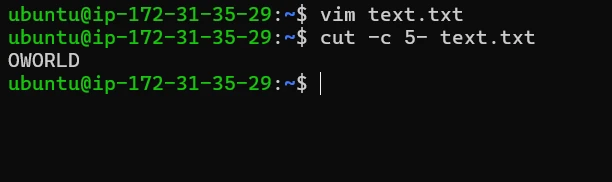
From the beginning to a position
You can also extract from the start of the line up to a specific position. cut -c -3 filename means: display characters from position 1 to position 3.
Full example. With the same text.txt (HELLOWORLD):
cut -c -3 text.txt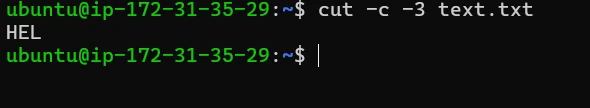
Several ranges at once
You can also extract multiple character ranges at the same time. cut -c 3-5,7-10 filename extracts characters 3 to 5 and characters 7 to 10; both ranges are printed together.
Full example. With the same text.txt (HELLOWORLD):
cut -c 3-5,7-10 text.txt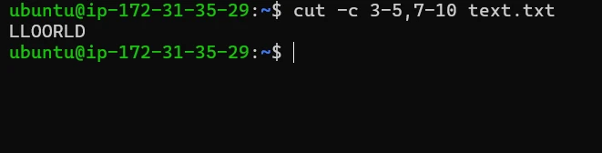
Characters 3–5 are LLO, characters 7–10 are ORLD, and both are combined: LLO + ORLD = LLOORLD.
| Form | Meaning | On HELLOWORLD |
|---|---|---|
cut -c 3 | one position | L |
cut -c 5-9 | from 5 to 9 | OWORL |
cut -c 5- | from 5 to the end of the line | OWORLD |
cut -c -3 | from the start up to 3 | HEL |
cut -c 3-5,7-10 | several ranges, joined | LLOORLD |
/etc/passwd), use -d for the delimiter and -f for the field number: cut -d ',' -f 2 users.csv prints the 2nd comma-separated column; cut -d ':' -f 1 /etc/passwd lists every username.tr · translate characters
tr stands for translate. It is used to change characters in text. Simple meaning: tr reads text from its input, modifies the characters, and prints the result. It does not change the original file; it only shows the modified output. It is used to:
Replace characters
Change every a into a 4, for example.
Convert characters
Change all lowercase letters to UPPERCASE.
Delete characters -d
Remove specific symbols or numbers from a list.
Compress repeats -s
Turn “helloooooo” into “hello” by squeezing the extra letters.
Basic syntax. The command needs two sets of characters: SET1 (what to find) and SET2 (what to change it to).
tr [options] SET1 SET2- SET1 → characters that will be replaced or modified
- SET2 → characters that will replace SET1
So the rule is: characters in SET1 are replaced by the matching characters in SET2.
Simple example:
echo "apple" | tr a ooppleecho "apple" prints the word apple; tr a o means “replace a with o”. So apple → opple.
tr only reads its input stream. Feed it with a pipe (cat names.txt | tr 'a-z' 'A-Z') or with input redirection (tr 'a-z' 'A-Z' < names.txt). tr 'a-z' 'A-Z' names.txt is an error.Replacing characters
What it does: swaps specific letters or symbols for new ones. Simple meaning: you tell the computer “whenever you see this letter, change it to that letter”. It works on every match it finds in the text.
echo "text" | tr 'find' 'replace'Full example. Capitalise the first letter of the word “hello”:
echo "hello" | tr 'h' 'H'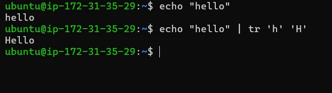
Hello.Replace multiple characters
What it does: replaces several different characters at the same time. Simple meaning: you provide two lists. The first letter of the “find” list is matched with the first letter of the “replace” list, the second with the second, and so on.
echo "text" | tr 'set1' 'set2'Full example. Make the vowels e and o uppercase in the word “hello”:
echo "hello" | tr 'eo' 'EO'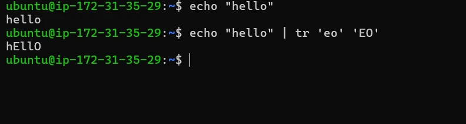
hEllO.Convert lowercase to uppercase
What it does: turns every small letter into its capital version. Simple meaning: a “Caps Lock” converter. Instead of typing individual letters, you give the whole range: 'a-z' (all lowercase) and 'A-Z' (all uppercase).
echo "text" | tr 'a-z' 'A-Z'Full example. Make the word “linux” stand out in all caps:
echo "linux" | tr 'a-z' 'A-Z'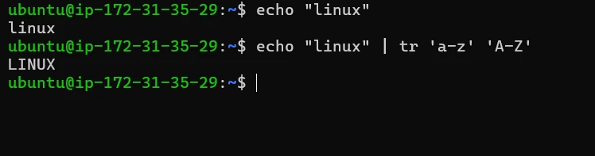
linux → LINUX.Convert uppercase to lowercase
What it does: turns every capital letter into its lowercase version. Simple meaning: it “undoes” capitalisation. Very helpful for standardising data so that “Apple” and “apple” are treated the same way. The ranges are 'A-Z' then 'a-z'.
echo "TEXT" | tr 'A-Z' 'a-z'Full example. Make the all-caps word “LINUX” lowercase:
echo "LINUX" | tr 'A-Z' 'a-z'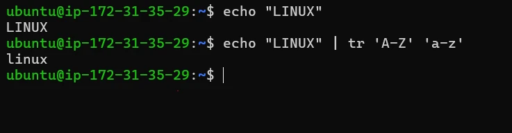
LINUX → linux.Delete characters: -d
What it does: completely removes specific characters from your text. Simple meaning: an “eraser”. Instead of replacing a character with something else, it just makes it disappear.
tr -d 'characters'Full example. A string has numbers in it, and you only want the letters:
echo "hello123" | tr -d '0-9'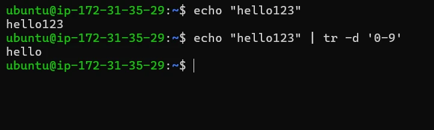
hello.Delete spaces
What it does: removes every blank space from a line of text. Simple meaning: it “squashes” the words together so there are no gaps. Put a single space inside the quotes: ' '.
tr -d ' 'Full example. Turn the phrase “hello world” into a single word:
echo "hello world" | tr -d ' '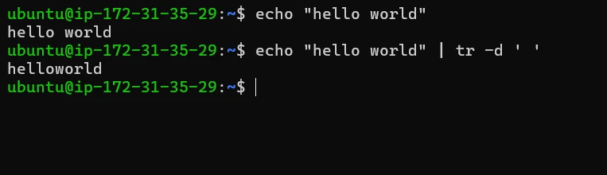
helloworld.Compress repeated characters: -s
What it does: squeezes several identical characters that are touching into just one. Simple meaning: a “shrinker”. If you accidentally typed a letter too many times, this cleans it up.
tr -s 'character'Full example. A word has too many “o”s at the end:
echo "hellooooo" | tr -s 'o'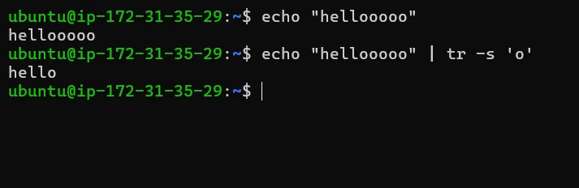
hello.The five filters at a glance
| Filter | Job | Key options |
|---|---|---|
wc | measure text | -l lines, -w words, -m characters, -c bytes |
sort | order lines | -n numeric, -r reverse, -u unique |
uniq | collapse adjacent duplicates | -c count (sort first!) |
cut | keep part of each line | -c positions, -d + -f fields |
tr | change characters | -d delete, -s squeeze |
Each one is small, but chained with | they become powerful:
cat words.txt | tr 'A-Z' 'a-z' | sort | uniq -c | sort -nr | head -n 5 # top 5 words, case-insensitiveKey terms
- Text filter
- A small program that takes text as input, processes it, and prints the result without changing the original source.
- wc
- Word count: prints the number of lines, words and bytes in text; -l, -w, -m and -c select lines, words, characters or bytes.
- Newline
- The invisible character (\n) stored each time a line ends. It counts as one character and one byte in wc.
- Characters vs bytes
- A character is one visible symbol; a byte is a unit of storage. English letters use 1 byte, but emojis and many scripts use 2 to 4 bytes per character.
- sort
- Prints lines in order: alphabetical by default, numeric with -n, reversed with -r, and de-duplicated with -u.
- uniq
- Collapses consecutive identical lines into one; -c shows how many copies there were. Usually used after sort.
- cut
- Extracts part of every line: by character position with -c, or by field with -d (delimiter) and -f (field number).
- tr
- Translate: replaces characters in SET1 with those in SET2, deletes with -d, or squeezes repeats with -s. Reads only from its input stream.
- Pipe (|)
- Sends the output of one command directly into the input of the next, so filters can be chained.
Self-check
Pick an answer. You’ll see right away whether it’s correct and why.
Which command tells you how many lines are in app.log?
wc -w app.logwc -l app.logwc -c app.logsort -l app.log
-l counts lines; -w counts words; -c counts bytes.
A file holds 10, 2, 50, 1 (one per line). What does plain sort print?
- 1 2 10 50
- 50 10 2 1
- 10 2 50 1
- 1 10 2 50
Without -n, sort compares text character by character, so “10” comes before “2”.
Why do we usually write sort file | uniq instead of just uniq file?
- uniq only removes duplicates that are next to each other
- uniq can’t read files
- sort makes uniq faster but isn’t needed
- uniq deletes the file otherwise
uniq compares each line with the one before it. Sorting brings identical lines together.
What does cut -c 2-4 print for the line LINUX?
LINNUXINUIN
Positions start at 1: L1 I2 N3 U4 X5. Characters 2 to 4 are I, N, U.
What is the output of echo "banana" | tr 'a' 'o'?
bonanabononobananabnn
tr replaces every matching character, not just the first.
wc -m and wc -c give different numbers for a file. What is the most likely reason?
- The file is corrupted
- The file has blank lines
- wc counts spaces only in -m
- The file contains characters that take more than one byte, like emojis
-m counts characters and -c counts bytes. They match only when every character is 1 byte.
Which shows the highest score first from a file of numbers?
sort -nr scores.txtsort -r scores.txtsort -u scores.txtuniq -c scores.txt
-n compares by value and -r reverses, so the biggest comes first. -r alone would compare as text.
Which command removes all digits from text?
tr -s '0-9'cut -c 0-9tr -d '0-9'sort -u
tr -d deletes every character in the set; -s only squeezes repeats.
All of it, in one sentence
Text filters take text in and print a processed version: wc measures it, sort orders it, uniq removes adjacent repeats, cut keeps just the part you need, and tr swaps or deletes characters.
— Vishwa Mohan